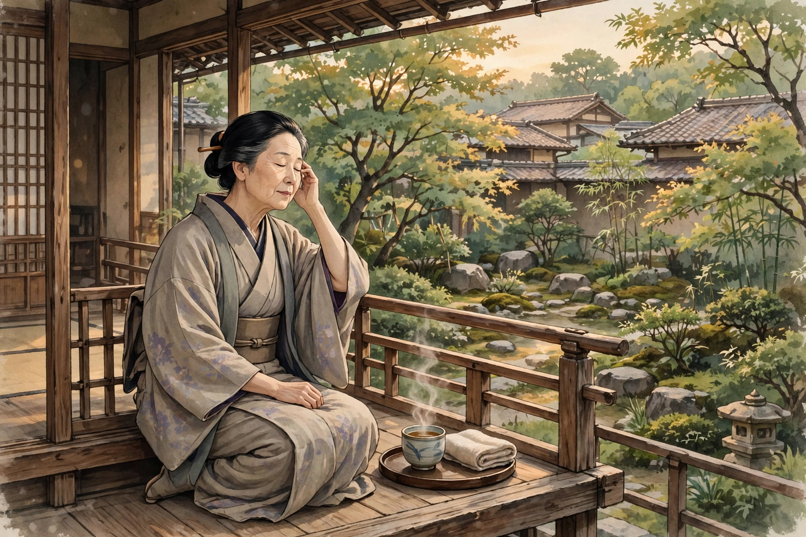

京都で50代に気になる頭の重さ｜年代と日常の見直しとセルフケア、受診の目安

午前中から頭が重い。夕方になると、頭の奥がずんと重く感じられ、目の奥まで重い感じがする——。 若い頃は気にも留めなかった頭の重さが、50代になってから気になるようになった、出る頻度や感じ方が変わってきた、という方は少なくありません。 この記事では、50代の頭の重さについて、一般的な解説と、年代とともに変わる体や日常の過ごし方など考えられる要因の整理、日常で取り入れられるセルフケア、受診の目安をまとめました。 なお、50代の頭痛を取り上げた頭痛の記事、雨の日や低気圧の日に感じる頭の重さを取り上げた雨の日の頭の重さの記事、週末に感じる頭の重さを取り上げた週末の頭の重さの記事とは場面を分け、ここでは「50代という年代と、日常の過ごし方」に焦点を当ててご紹介します。
50代の頭の重さとは
「頭の重さ」は、頭が重い・すっきりしない・奥が詰まったように感じる、といった感覚を表す一般的な言い方で、それ自体が一つの病名というわけではありません。 感じ方もさまざまで、頭全体がぼんやり重く感じる方もいれば、後頭部から首の後ろにかけて張った感じがする方、こめかみから目のまわりが重く感じる方もいます。 ズキズキとした痛みをともなうこともあれば、痛みはなく重さだけが気になることもあります。
50代は、更年期の時期と重なり、仕事や家庭での役割も大きい年代です。体の変化と日常の負担が重なる中で、頭の重さの出方や頻度が変わってきたと感じる方もいます。 まずは「どんな日の・どの場面で・休むとどう感じるか」を振り返ってみることが、無理のないケアの出発点になります。 更年期の体の変化全般については、更年期のゆらぎの記事もあわせてご覧ください。
50代の頭の重さに考えられる要因
50代の頭の重さの背景には、一つの原因ではなく、年代とともに変わる体と、日々の過ごし方の積み重ねが重なっていることがあります。一般に、要因として次のようなものが挙げられます。いずれも断定ではなく、ご自身の体と日常を振り返るための整理としてご覧ください。
- 更年期との重なり：50代は、女性ホルモンの分泌が大きく変化する時期と重なります。ほてりや眠りの変化とあわせて、頭の重さを意識しやすくなる方もいます。更年期の変化については更年期のゆらぎの記事もあわせてご覧ください
- 首・肩まわりのこり感：頭を支える首や肩の筋肉が張ると、その張りが頭の重さとして意識されることがあります。肩と首のこり感については肩と首のこり感の記事、首まわりの張りについては首こりの記事もあわせてご覧ください
- 目の疲れと見え方の変化：細かい文字が見えにくくなり、無意識に目を凝らしたり、前のめりの姿勢で読んだりする時間が増えると、首や肩の力みにつながり、頭の重さとして感じることがあります。目の疲れ感については目の疲れの記事も参考にしてみてください
- 睡眠の変化：眠りが浅い、夜中に目が覚めるといった変化が増えやすい年代です。眠りが足りない日が続くと、頭の重さが目立ちやすくなります。夜の過ごし方については寝つきと疲労感の記事も参考にしてみてください
- 血圧の変化：年齢とともに血圧は変化しやすく、ご自身では気づかないうちに数値が高くなっていることがあります。健診の結果を確認し、気になる数値が続く場合は医療機関で相談してみてください
- 天気や気圧の変化：雨の前や台風の接近など、気圧が下がる日に頭の重さを感じやすい方もいます。雨の日の過ごし方については雨の日の頭の重さの記事もあわせてご覧ください
- 水分と食事のリズム：忙しさで水分補給や食事の間隔が空きすぎると、体がだるく感じられ、それが頭の重さとして意識されることがあります
- 役割の多さと緊張の続き：仕事の責任や家族のケアなど、気を張る場面が多い年代でもあります。緊張が続く日は、無意識のうちに肩や首、あごに力が入りやすくなります
東洋医学では、頭の重さは体を巡る「気」や「血」の滞りと結びつけて捉え、首や肩まわりのこり感や冷え、眠りの浅さが、その滞りと関係すると考えます。 当サロンのお悩み別ガイドでも、施術でのアプローチをご紹介していますので、あわせてご覧ください。
50代の日常で取り入れられるセルフケア
若い頃と同じやり方ではなく、今の体と暮らしに合わせて無理なく続けられる対処をまとめました。重さが強いときは無理をせず、まずは休むことを優先してください。
- 首と肩の後ろを温める：蒸しタオルを首の後ろや肩に当てる、帰宅後に湯船にゆっくりつかるなど、張りを感じやすい首・肩まわりを温める時間をとってみてください
- 静かな場所で目を閉じて休む：光や音が気になるときは、照明を落とした静かな場所でしばらく目を閉じ、画面や文字から離れて休んでみてください
- こまめに水分をとる：のどの渇きを感じる前に、一口ずつこまめに水分をとる習慣をつけてみてください
- 画面と読書に休憩をはさむ：細かい文字や画面を見続ける時間には区切りをつけ、合間に目線を遠くへ移し、首や肩をゆっくり回してみてください
- 眠りのリズムを大きく崩さない：寝る前の画面時間に区切りをつけ、起きる時刻をそろえるなど、眠りが浅くなりがちな年代だからこそ、リズムを整える工夫をしてみてください
- 軽く体を動かす：重さが気にならない範囲で、肩を前後にゆっくり回す、両肩をすくめてストンと落とすなど、小さな動きをはさんでみてください
- 頭の重さの様子をメモする：いつ・どんな日の後に・どのくらい続いたかを簡単に書き留めておくと、ご自身のパターンが見えてきます。受診の際の手がかりにもなります
- 強いマッサージや自己流の対処は避ける：重さが強いときに首や頭を強く押すと、かえって負担になることがあります。鋭い痛みや吐き気をともなうときは無理をせず休んでください
京都は、坂道や石段のある寺社も多く、歩く楽しみのある街です。 50代からの街歩きは、距離を欲張らず、途中で腰かけて休む場所を先に決めておくと、頭や体の様子を見ながら無理なく回れます。日差しの強い日は帽子をかぶり、水分を持ち歩くこともおすすめです。
こんなときは医療機関へ
頭の重さの多くは日常の積み重ねと関係しますが、中には早めの確認が必要な場合もあります。とくに50代以降で頭の重さの出方が変わってきた場合は、背景の確認が大切です。次のような場合は、脳神経外科や脳神経内科、内科など医療機関への受診をご検討ください。今までにない強い頭痛のときは、ためらわずに医療機関へ相談してください。
- 今までに経験したことのない、突然の強い頭痛がある
- 手足のしびれや動かしにくさ、言葉のもつれ、物が二重に見えるなど、頭の重さ以外の症状をともなう
- 発熱や、首の後ろの硬さをともなう
- 頭を打ったり転んだりした後に、頭の痛みや重さが続いている
- 頭の重さが日に日に強くなる、感じる頻度が増えている
- 50歳を過ぎてから初めて出てきたタイプの頭の重さ、または出方が大きく変わった
- 市販薬を使う日が増えている、使ってもおさまらず、日常生活に支障が出ている
- 朝方に頭の重さが強く、吐き気をともなう
当サロンは医療機関ではなく、施術はリラクゼーションと美容を目的としたものです。診断や治療は行いませんので、 気になる症状がある場合はまず医療機関へご相談ください。
サロンのご案内 — ステラアルタイル（京都）
ステラアルタイルは、阪急 京都河原町駅・京阪 祇園四条駅からアクセスできる、京都市内の女性専用プライベートサロンです （詳しい住所は、ご予約が確定した方にご案内しています）。 施術は、オイルマッサージと美容整体を組み合わせた構成で、背中・脚・腕・頭まで、全身を巡るように丁寧にほぐしていきます。頭まわりや首・肩まわりのケアも施術に含まれます。カウンセリングでその日の体の状態をうかがい、圧の強さも都度調整します。あわせて、日常の休み方や体の使い方についてもご説明します。 夕方17時からの営業のため、お仕事帰りの時間にもご利用いただけます。
基本コースは90分・10,000円（税込）です。営業時間は月曜〜土曜の17:00〜22:00（日曜休み）、完全予約制で営業しています。 なお、現在は近日開院予定のため、ご予約の受付はまだ開始していません。受付開始はサイトでご案内します。
- 施術メニュー（オイルマッサージ・美容整体）
- お悩み別ガイド
- 京都で50代に気になる頭痛｜年代と日常の過ごし方、セルフケア、受診の目安
- 京都で雨の日に気になる頭の重さ｜低気圧の日の過ごし方とセルフケア、受診の目安
- 京都で週末に気になる頭の重さ｜休みの日の過ごし方とセルフケア、受診の目安
- 京都で気になる更年期のゆらぎ｜感じやすい変化とセルフケア、受診の目安
- 京都で50代に気になる腰の重さ｜年代と日常の過ごし方、セルフケア、受診の目安
- 京都で50代に気になる目の疲れ感｜年代と観光・画面時間の見直しとセルフケア、受診の目安
- 京都でデスクワーク後に気になる首こり｜画面時間の見直しとセルフケア、受診の目安
- セルフケア資料ライブラリ・無料姿勢チェック
- 料金・営業時間
- よくある質問
- ご予約・お問い合わせ